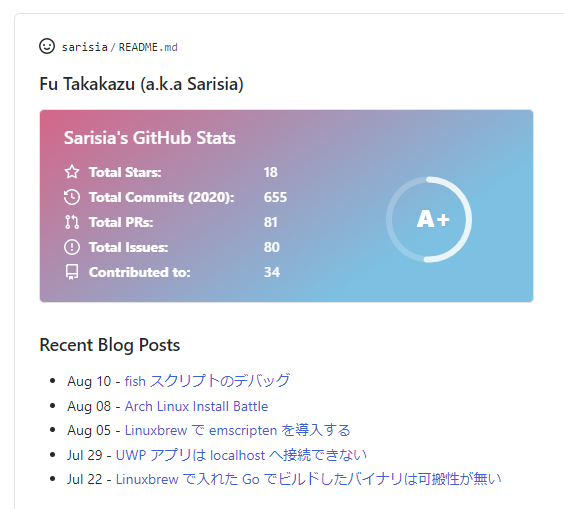

こんにちは.
皆様, GitHub Profile README は使っていますか？ GitHub のプロフィールページに任意の Markdown 文章を表示できるアレです.
私も最初は名前とリンクだけを適当に貼ったページを用意していましたが, GitHub Readme Stats を見つけてから, README のカスタマイズが楽しくなってしまいました.
ブログの新着記事を表示したい
本題です.
GitHub で, 生やした草やリポジトリに加え, README でアピールできるようになった今, プロフィールを見に来てくださった人に最新のブログ記事や Qiita 記事更新をアピールしたくないですか？
というわけで, RSS フィードから最新記事を取得して Markdown を自動更新する GitHub Actions アクションを作りました1:
Actions Readme Feed - GitHub Marketplace
使い方
基本的にはマーケットプレイスのページに書いてある通りです.
README.md の記事一覧を挿入したい箇所にフラグコメントを突っ込みます:
### Recent Blog Posts
<!-- feed start -->
<!-- feed end -->
.github/workflows/ 以下のワークフローにステップを追加します. コミットまではやらないので気合で頑張ります. この辺のアクションを使うと楽かもしれません…:
steps:
- uses: actions/checkout@v2
- uses: sarisia/actions-readme-feed@v1
with:
url: 'https://note.sarisia.cc/index.xml'
file: 'README.md'
- run: |
git config --global user.name "${{ github.actor }}"
git config --global user.email "${{ github.actor }}@users.noreply.github.com"
git add .
git commit -m "docs: update feed" || true
git push
プロフィールページにブログの投稿が追加されます！

応用編
Qiita の表示
https://qiita.com/[username]/feed でRSSフィードが取れるので2, これを url として渡します:
- uses: sarisia/actions-readme-feed@v1
with:
url: 'https://qiita.com/sarisia/feed'
file: 'README.md'
自動更新
Workflow を schedule で回してあげれば自動更新できます:
on:
schedule:
- cron: '0 */6 * * *'
jobs:
readme:
runs-on: ubuntu-latest
steps:
- uses: actions/checkout@v2
- uses: sarisia/actions-readme-feed@v1
まとめ
出力のテンプレート機能やフラグ変更など, もっと高度なカスタマイズも出来るようになっているので, リポジトリページも参考に是非使ってみてください！
-
実は一週間先を越されていた: README the RSS
が, 多分カスタマイズできるオプションはこっちのほうが多いはず… ↩︎ -
公式のドキュメントが無いのでいつか急に消滅するかもしれません ↩︎